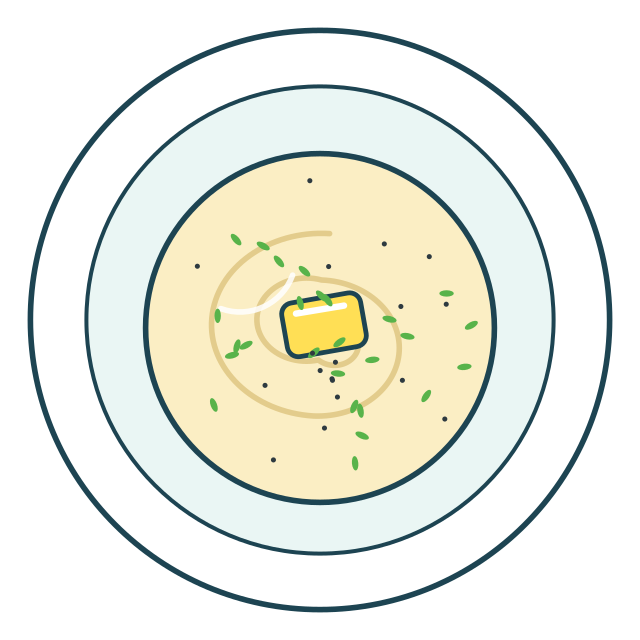

.png)

Cena
Puré de papa cremoso
- Tiempo40 min
- Rinde6 porciones
- DificultadFácil
Ingredientes
- 800 g de papa nueva
- 200 ml de crema de leche para cocinar
- 100 g de mantequilla
- 100 ml del agua de cocción de la papa
- 50 g de queso rallado tipo cheddar
- 1 hoja de laurel
- Sal
- Pimienta blanca molida
Preparación
- Pela la papa y córtala en trozos del mismo tamaño para que se cocine parejo.
- Lleva a ebullición agua con 1 cucharadita de sal y el laurel.
- Cuece la papa hasta que un palillo entre sin resistencia.
- Escurre y reserva un vaso del agua de cocción.
- Machaca la papa con un prensapapas o un tenedor, sin dejar trozos. Un pasapuré da mejor resultado.
- Seca la olla con papel absorbente y derrite en ella la mantequilla con la crema y el queso, hasta obtener una mezcla homogénea.
- Agrega la papa machacada y mezcla bien. Ajusta la espesura con el agua reservada (o con más crema o leche).
- Sazona con sal y pimienta y revuelve hasta que quede cremoso. Sirve bien caliente.
Consejos
- Machaca la papa; no la licúes ni la batas, o quedará pegajosa.
- Ajusta la textura con el agua de cocción en lugar de añadir líquido de golpe.
- Para recalentar las sobras, hazlo a fuego bajo con un poco de leche o crema.
Receta adaptada de Directo al Paladar. Texto reescrito y cantidades tomadas de la fuente.